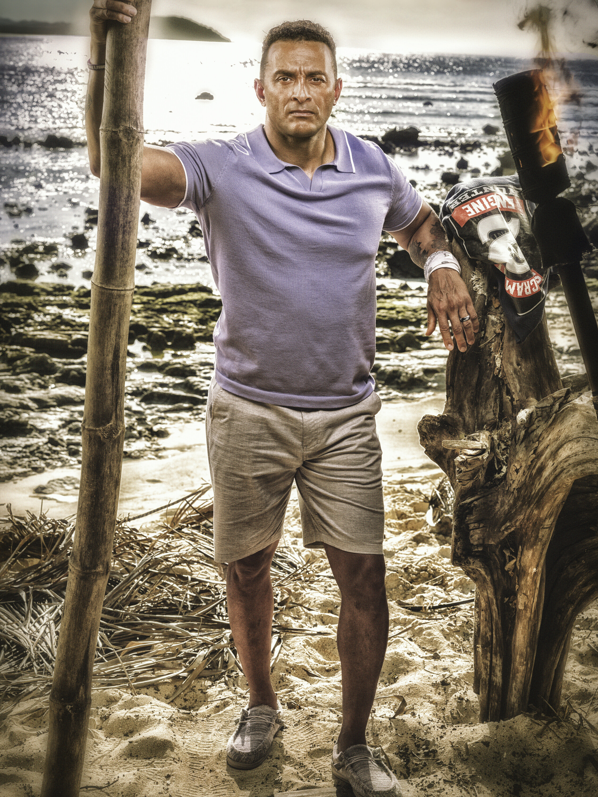

Joe Hunter
Cila Tribe
Previous Season
48
Status
Active
Season 48

Season 50
About
Joe Hunter is one of the physically strongest players from the new era of Survivor. He made his debut on Season 48 and quickly established himself as a formidable competitor in challenges. His combination of physical prowess and social awareness made him a memorable player in his first outing.
Season 50 Game
Joe returns to the game on the Cila tribe alongside other heavy hitters like Ozzy Lusth and Cirie Fields. With a tribe full of big personalities and returning legends, Joe's challenge strength could make him a valuable ally or a dangerous threat.